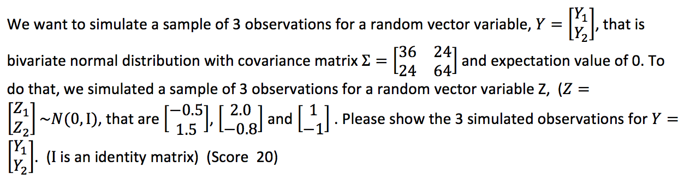
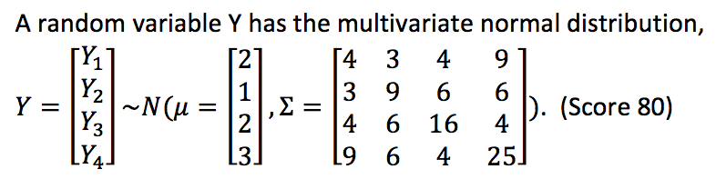

\(\sigma_{Y_1} = \sqrt{36} = 6, \ \sigma_{Y_2} = \sqrt{64} = 8\)
\(\rho = \frac{Cov(Y_1, Y_2)}{\sigma_{Y_1}\sigma_{Y_2}} = \frac{24}{6*8} = 0.5\)
\(\mu_{Y_1} = \mu_{Y_2} = 0\)
\(Y_1 = \sigma_{Y_1}Z_1 + \mu{Y_1} = 6Z_1\)
\(Y_2 = \sigma_{Y_2}(\rho Z_1 + \sqrt{1-\rho ^2}Z_2) + \mu_{Y_2} = 8(\frac{1}{2}Z_1 + \frac{\sqrt{3}}{2}Z_2) = 4Z_1 + 4\sqrt{3}Z_2\)
So the 3 simulated observations for Y are:
\(\begin{bmatrix} -3 \\ 6\sqrt{3}-2\end{bmatrix}\), \(\begin{bmatrix} 12 \\ 8 - \frac{16\sqrt{3}}{5}\end{bmatrix}\), \(\begin{bmatrix} 6 \\ 4-4\sqrt{3}\end{bmatrix}\)

(1) Show how to transform Y into standard normal distribution Z~N(0,Ι_4×4), based on cholesky decomposition. (Ι_4×4 is an identity matrix) (Score 20)
First of all, we use Cholesky Decomposition to find the lower triangular matrix L of \(\Sigma\)
\(LL^T = \Sigma\)
Then, we generate matrix Z = \([Z_1,Z_2,Z_3,Z_4]^T\)where Cov(\(Z_i,Z_j\)) = 0 for \(i\neq j\) and 1 for \(i = j\), so, Cov(Z) = \(I_{4 \times 4}\)
And let Y = LZ
\(E(LZ) = LE(Z) = L*0 = 0\)
\(Cov(LZ) = LCov(Z)L^T = LL^T = \Sigma\)
So Y = LZ ~ N(0, \(\Sigma\))
Transform Y ~ N(0, \(\Sigma\)) to Y ~ N(0,1)
Let \(Y = L^{-1}LZ\)
\(E(L^{-1}LZ) = L^{-1}E(LZ) = 0\)
\(Cov(L^{-1}LZ) = ICov(Z)I^T = I_{4\times 4}\)
So \(Y = L^{-1}LZ \sim N(0, I_{4\times 4})\)
(2) What are the eigenvectors and eigenvalues of Sigma? (Score 20)
Sigma = as.matrix(t(data.frame(c(4,3,4,9),c(3,9,6,6),c(4,6,16,4),c(9,6,4,25))))
ev <- eigen(Sigma)The eigenvalues are:
ev$values## [1] 33.1672449 15.5090883 5.0315730 0.2920938\(\lambda_1 = 33.1672449\)
\(\lambda_2 = 15.5090883\)
\(\lambda_3 = 5.0315730\)
\(\lambda_4 = 0.2920938\)
The eigenvectors are:
ev$vectors[,1]## [1] -0.3321330 -0.3332248 -0.3794714 -0.7966495ev$vectors[,2]## [1] 0.02963558 -0.28389298 -0.81958885 0.49679032ev$vectors[,3]## [1] -0.1197872 0.8990730 -0.3984055 -0.1363518ev$vectors[,4]## [1] 0.935125880 0.005812957 -0.159839316 -0.316160072\(\mu_1 = \begin{bmatrix}-0.3321330\\ -0.3332248\\ -0.3794714\\ -0.7966495 \end{bmatrix}\)
\(\mu_2 = \begin{bmatrix}0.02963558\\ -0.28389298\\ -0.81958885\\ 0.49679032\end{bmatrix}\)
\(\mu_3 = \begin{bmatrix}-0.1197872 \\0.8990730 \\-0.3984055\\-0.1363518\end{bmatrix}\)
\(\mu_4 = \begin{bmatrix}0.935125880\\0.005812957\\-0.159839316\\-0.316160072\end{bmatrix}\)
(3) Please show the steps to generate a new transformed random variable W that will completely represent Y using method of principal component analysis (PCA). What is the total variance of W? (i.e. sum of variance of each W’s scalar variable). (Score 20)
Bssed on Spectral Decompostion \(\Sigma = Q\Lambda Q^T\)
Q and \(Q^T\):
# Q
Q <- ev$vectors
Q## [,1] [,2] [,3] [,4]
## [1,] -0.3321330 0.02963558 -0.1197872 0.935125880
## [2,] -0.3332248 -0.28389298 0.8990730 0.005812957
## [3,] -0.3794714 -0.81958885 -0.3984055 -0.159839316
## [4,] -0.7966495 0.49679032 -0.1363518 -0.316160072# t(Q)
Q_T <- t(Q)
Q_T## [,1] [,2] [,3] [,4]
## [1,] -0.33213302 -0.333224756 -0.3794714 -0.7966495
## [2,] 0.02963558 -0.283892977 -0.8195889 0.4967903
## [3,] -0.11978722 0.899072994 -0.3984055 -0.1363518
## [4,] 0.93512588 0.005812957 -0.1598393 -0.3161601Then \(W = Q^T Y = \begin{bmatrix}\mu_1^TY\\\mu_2^TY\\\mu_3^TY\\\mu_4^TY \end{bmatrix}\)
\(Var(W) = Var(Q^T Y) = Q^TVar(Y)Q = Q^T(Q\Lambda Q^T)Q = \Lambda\)
Total Variance of W = \(\lambda_1 + \lambda_2 + \lambda_3 + \lambda_4\)
sum(ev$values)## [1] 54The total variance of W is 54
(4) The original Y is a 4 by 1 dimension of vector. Please show the steps to generate a new transformed random variable V with reduced dimension that can explain at least 80% of total variance of Y using method of principal component analysis (PCA). (Score 20)
\(\Sigma = Q\Lambda Q^T\)
Then \(V_i = \mu_iY\)
The eigenvalues are:
ev$values## [1] 33.1672449 15.5090883 5.0315730 0.2920938\(\lambda_1 = 33.1672449\)
\(\lambda_2 = 15.5090883\)
\(\lambda_3 = 5.0315730\)
\(\lambda_4 = 0.2920938\)
\(\frac{\lambda_1 + \lambda_2}{\lambda_1 + \lambda_2 + \lambda_3 + \lambda_4} = 0.90\)
So we select the first 2 number of \(V_i\).
Then \(V = \begin{bmatrix}\mu_1Y\\ \mu_2Y\end{bmatrix}\)